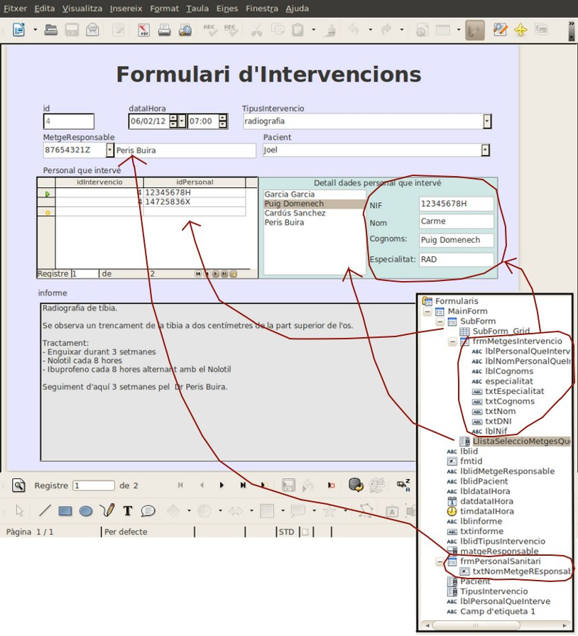

El projecte consistirà en crear una base de dades que permeti gestionar un hospital. L'hospital està compost de diferents unitats hospitalàries cada una de les quals té assignat diferents personal sanitari. Per exemple a la unitat de traumatologia se li han assignat 6 metges, 3 anestesistes, 5 fisioterapeutes, 8 infermeres i 15 auxiliars d'infermeria.
Per fer aquestes assignacions caldrà controlar l'especialitat del personal sanitari. l'Especialitat es definirà per una categoria: metge, fisioterapeuta, infermera, ... i una especialitat: trauma, medicina general, neurologia, maxil·lofacial, etc.
La base de dades gestionarà també els pacients de l'hospital, tant els que requereixin d'hospitalització com els que s'intervinguin sense ingrés. Els pacients no s'esborren mai per tal de mantenir un historial d'ingressos i intervencions.
Dels ingressos caldrà saber la data de l'ingrés i la data d'alta en cas que ja s'hagi produït, el pacient que es trobava ingressat, l'habitació i el llit on es va hospitalitzar al malalt i el temps que el metge va estimar que romandria ingressat.
Les intervencions es classifiquen per tipus. Per exemple visita, operació, radiografia, etc. Cada intervenció ha de tenir un metge responsable que és qui l'ha decidit. Ara bé, a banda del metge responsable, hi podran intervenir altre personal sanitari com fisioterapeutes, infermeres, altres metges, anestesistes, radiòlegs, etc. Es necessita saber qui són tots el que actuïn en una intervenció.
En aquesta part del projecte caldrà crear Un conjunt de formularis que ajudin a introduir la informació de la base de dades de forma més còmoda.
A mode de guia us direm que:

Cal que tingueu en compte que per fer aquest formulari s'han fet servir 4 formularis (com podeu observar en el navegador de formularis adjunt a la figura):
Destacar també que el control data i hora està format per dos controls un de tipus data i l'altre de tipus hora amn la propietat "selecció de valors" la propietat "desplegat" actives. Els controls TipusIntervenció i Pacient són de tipus llista per tal de poder mostrar uns camps descriptius però emmagatzemar les claus principals. En canvi s'ha considerat que el nif del metge responsable era suficient per fer la tria. Malgrat tot, per assegurar que l'usuari pugui estar segur de la tria realitzada, s'afegeix un camp de només lectura amb els cognoms del metge.
Finalment comentar que el camp informe és de tipus quadre de text al qual se li ha modificat les propietats per tal de convertir-lo en un control multi-línia i amb la barra de desplaçament activa.
Cal que abans de començar el mòdul següent lliuris el document de base de dades que hagis creat a la bústia del moodle oberta per a l'entrega de la cinquena part de projecte (Projecte V),

|
|

|
|